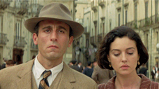

The Return
 Malèna and Nino return to the village after some years away. By this Renato has grown closer to being a man and now has a girlfriend. The women of the village still look on her with some suspicion but as she comes closer they seem to take solace in the fact Malèna now has a few lines around her eyes and has put on a few pounds. They welcome her to the market with an unspoken apology, respecting her status as a wife and the fact she had returned to the scene of her brutal treatment. When one of the women from the village greets Malèna with a hello there is a tense momentary silence as they wait to see will she respond.